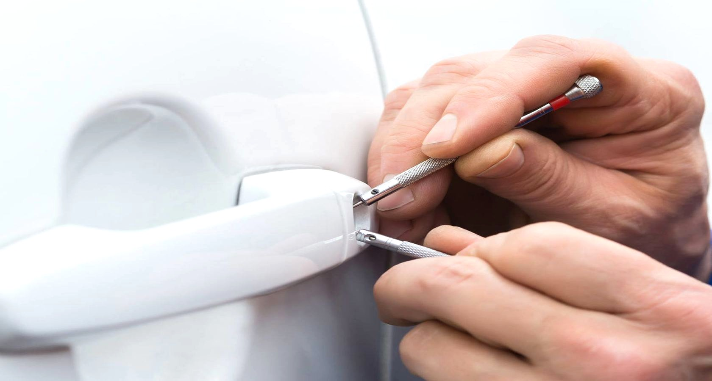
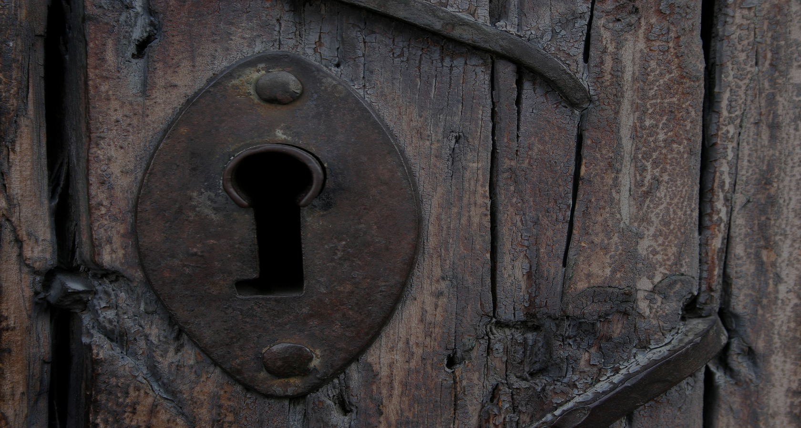
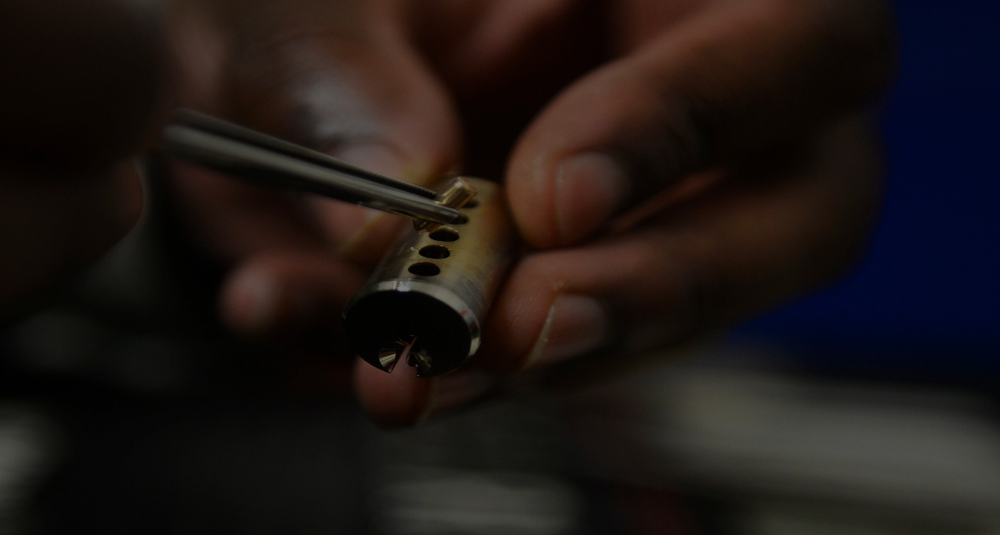
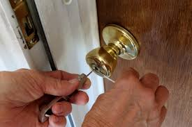

Servicio de cerrajería a domicilio y mantenciones para hogares, empresas e instituciones, con casi 20 años en el mercado.
Llamar ahora



CMG Cienfuegos es la prueba visible de que el oficio de la cerrajería es sumamente valioso en nuestro diario vivir. Con casi 20 años de participación en el mercado, hemos desarrollado cada aspecto del negocio para ir a la par con los cambios y avances.
Solucionar y mejorar el servicio de la industria cerrajera, con servicios integrales y un grupo de expertos que dan celeridad e importancia a cada requerimiento. Hemos construido relaciones sólidas con entidades públicas y privadas que nos recomiendan.
Las Nieves 1451, Conchalí
Santiago